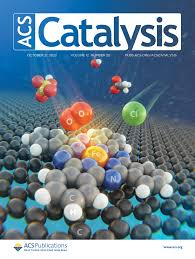

Light-controlled functions with metal–organic capsules: From guest release to catalysis.
Accounts of Chemical Research, 59(1), 120-135.
Esta revisión examina cómo la luz puede ser utilizada como un estímulo externo para controlar las funciones de cápsulas metal-orgánicas autoensambladas. Se discuten mecanismos de liberación de huéspedes foto-inducidos y la modulación de procesos catalíticos dentro de cavidades confinadas, abriendo nuevas vías en la química supramolecular responsiva.